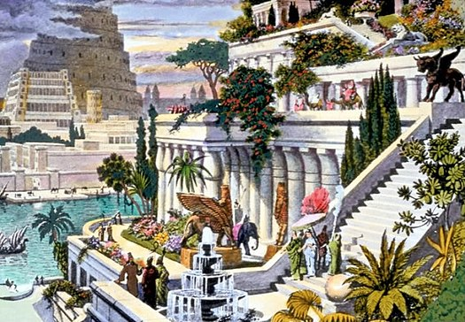

 The Hanging Gardens of Babylon were one of the Seven Wonders of the Ancient World as listed by Hellenic culture. It was described as a remarkable feat of engineering with an ascending series of tiered gardens containing a wide variety of trees, shrubs, and vines, resembling a large green mountain constructed of mud bricks. It was said to have been built in the ancient city of Babylon, near present-day Hillah, Babil province, in Iraq. Its name is derived from the Greek word kremastós (κρεμαστός, lit. "overhanging"), which has a broader meaning than the modern English word "hanging" and refers to trees being planted on a raised structure such as a terrace.
It is unclear whether the Hanging Gardens were an actual construction or a poetic creation, owing to the lack of documentation in contemporaneous Babylonian sources. There is also no mention of Nebuchadnezzar's wife Amyitis (or any other wives), although a political marriage to a Median or Persian would not have been unusual. Many records exist of Nebuchadnezzar's works, yet his long and complete inscriptions do not mention any garden. However, the gardens were said to still exist at the time that later writers described them, and some of these accounts are regarded as deriving from people who had visited Babylon. Herodotus, who describes Babylon in his Histories, does not mention the Hanging Gardens, although it could be that the gardens were not yet well known to the Greeks at the time of his visit. To date, no archaeological evidence has been found at Babylon for the Hanging Gardens. It is possible that evidence exists beneath the Euphrates, which cannot be excavated safely at present. The river flowed east of its current position during the time of Nebuchadnezzar II, and little is known about the western portion of Babylon. Rollinger has suggested that Berossus attributed the Gardens to Nebuchadnezzar for political reasons, and that he had adopted the legend from elsewhere.